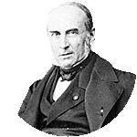
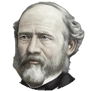
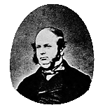
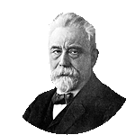
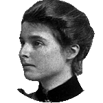
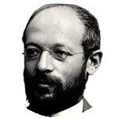
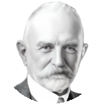
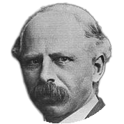
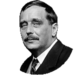

Society500
A timeline of sociology
Six periods, each a chart of the people who were working in it, the books they published, and the political, technological and ideational events around them.
Writing about society before sociology had a name, from the historical sociology of the fourteenth century to the political arithmetic of the seventeenth.
The Enlightenment sciences of man, political economy, and the first statistical descriptions of whole populations.









Sociology acquires chairs, journals and a canon, and the arguments now taught as classical are set out.
War, exile and depression reorder the discipline and move its centre of gravity across the Atlantic.
Post-war expansion, the quantitative turn, and the challenges mounted against both.
Since 2000: the nation-state, Europe and the old departments displaced as the centres of the discipline.
Each column holds the people on one page, the earliest born at the bottom, and the strip beneath gives each period its length in years. Point to a portrait for a name, and click it to open the biography.
About the timeline
Six pages cover the first five hundred years of writing about society, one for each period: Sources (1300–1650), Origins (1650–1840), Consolidation (1840–1920), Crisis (1920–1960), Reconstruction (1960–2000) and Decentring (2000–2040). A person appears on the page of the period to which their work belongs, or on two pages where it belongs to both, and their bar runs from birth to death; the bar of a living person fades out at the current date. The colour of a bar is keyed to the place where the person was born, with a small number of corrections where a birthplace misrepresents where they worked. The book icons along a bar are selected works, and the icons in the bottom row are the political, ideational and technological events of the period. Hover for the essentials and click for a biography, a summary of a work or a description of an event; scroll the rows with the mouse wheel, and zoom by dragging across the years.
The dropdown at the top highlights one tradition of enquiry and fades everyone who does not carry it. The traditions are ways of seeing what a society is made of, each with its own emphasis, approach and aim, rather than schools, so a person can belong to several:
- Critical – unmasking what a society takes as natural, by fable, satire and logic
- Utopian – what society could be under ideal conditions, with the dystopia as its mirror
- Revolutionary – overturning the unmasked order rather than describing it
- Historical – history as the force that shapes the present, and comparison across time
- Statistical – the average and the aggregate as the reality a science can reach
- Civic – improving actual conditions, against abstraction and against the ideal
- Biological – the human animal, and what biology allows a society to be
- Cultural – shared mental structures and language, and comparison across cultures
- Relational – society as relations and forms of association rather than persons or wholes